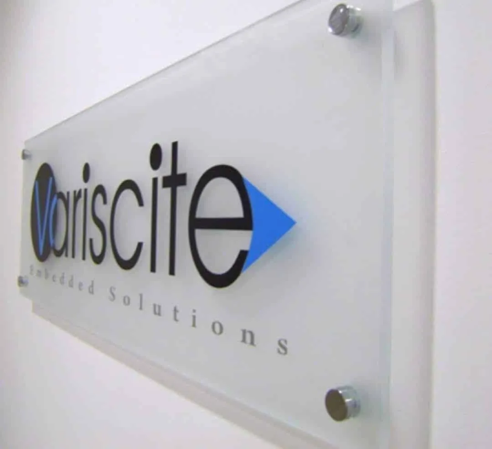
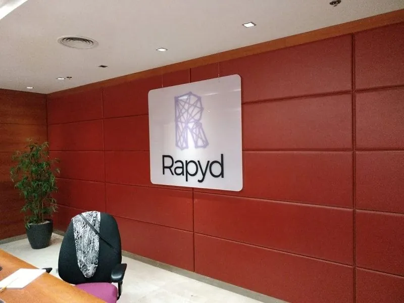
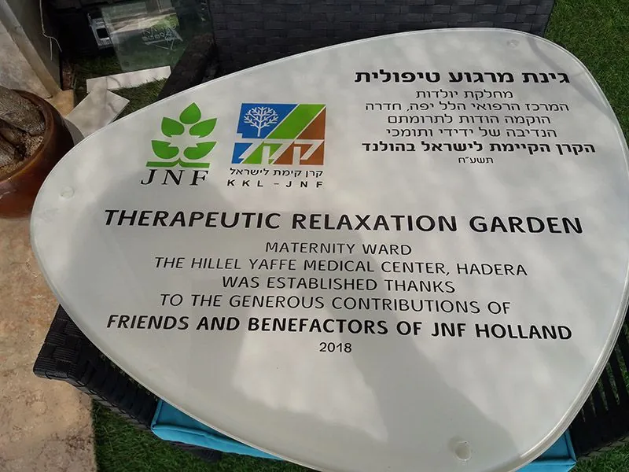
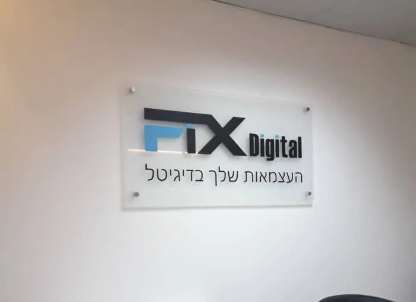
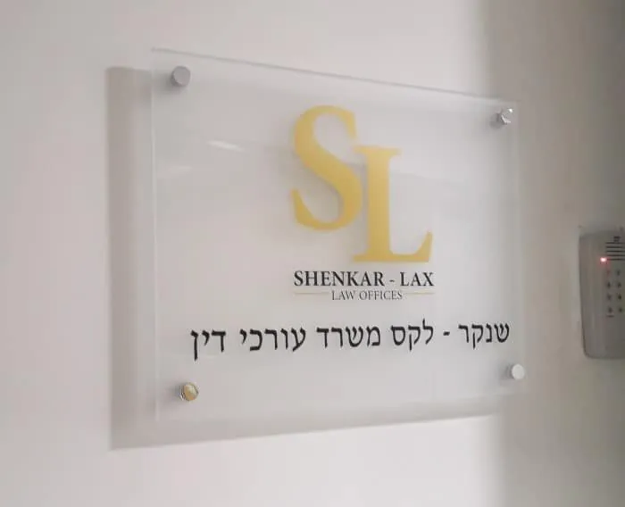
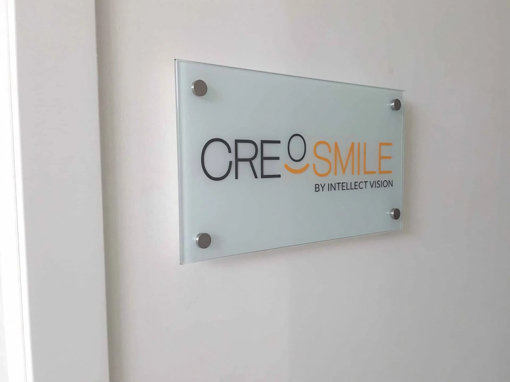
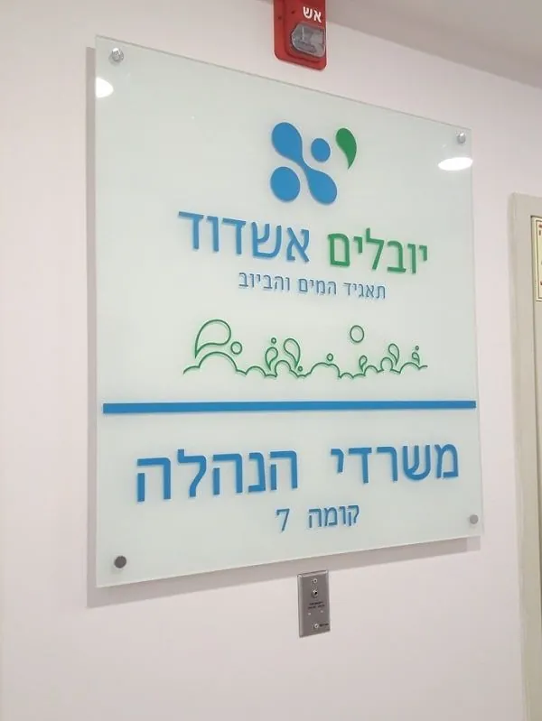
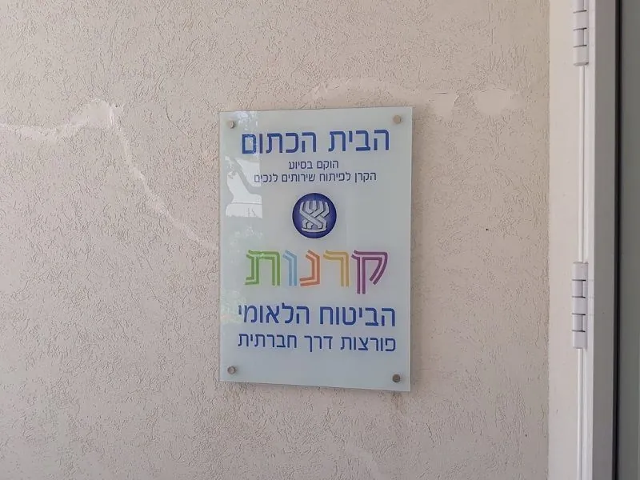

שלטי זכוכית למשרד, שעוברים איתכם גם למשרד הבא.
שלטי זכוכית הם השלט המכובד של המשרד: בכניסה, בקומה, ליד המעלית ועל דלתות החדרים.
פלומבה שלטים מייצרת שלטי זכוכית בעובי 4 עד 10 מ״מ לחברות הייטק, למשרדי עורכי דין ורואי חשבון, למרפאות, לקליניקות ולמשרדי ממשלה. הגרפיקה מודפסת בגב הזכוכית, נחתכת כמדבקה או מורכבת כאותיות בולטות, והשלט מותקן על ברגי הרחקה, כך שבמעבר משרד מפרקים ארבעה ברגים ולוקחים אותו איתכם. שולחים לוגו וצילום של הכניסה, מקבלים הדמיה בלי עלות, והשלט מוכן בדרך כלל תוך 5 עד 15 ימי עבודה.

שלטי זכוכית שכבר תלויים.








- וגם: CYNET, מגדלי הים התיכון, Prestocom, Della Pergola Architects, ד״ר דגנית סמואל, ומשרדי עורכי הדין DTL, Chen Bahar ואביטן ושות׳.
איזו זכוכית?
- שקופה, אקסטרה קליר: בלי הגוון הירקרק של זכוכית רגילה, כך שהלוגו נראה בצבעים שלו והקיר מאחור נשאר גלוי.
- חלבית: זכוכית מותזת חול, שמבטלת את השקיפות. טובה כשהקיר מאחור לא בדיוק מה שרוצים להראות.
- אסיד: זכוכית בגימור מט, כמו השלט של רפיד.
- מחוסמת: כמו השלט של FIX Digital, או מחוסמת ומלוטשת עם הדפסה בגב הזכוכית, כמו של פלתוס.
השאלה הנכונה היא לא איזו זכוכית יפה יותר, אלא מה יש על הקיר מאחוריה. שם מתחילה ההדמיה.
איזה עובי?
מ-4 עד 10 מ״מ. שלטי משרד שעשינו יצאו ב-6 מ״מ, כמו של Variscite ושל משרד המכירות של מגדלי הים התיכון בנורדיה, וב-8 מ״מ, כמו של רפיד. לוח ההנצחה של קרן קיימת לישראל יצא ב-10 מ״מ. את העובי לשלט שלכם ממליצים בשיחת הייעוץ, לפי הגודל והמקום.
איך הגרפיקה נכנסת לזכוכית?
- הדפסה דיגיטלית בגב הזכוכית: הגרפיקה מאחור, והחזית נשארת חלקה.
- הדפסת UV ישירות על הזכוכית.
- מדבקות ויניל בחיתוך צורני, או מדבקה שנראית כמו התזת חול.
- אותיות בולטות על הזכוכית, למשל אותיות פרספקס צבועות זהב על זכוכית חלבית.אותיות בולטות
- חיתוך צורני של הזכוכית עצמה, כמו לוח ההנצחה של קרן קיימת לישראל.
איך הוא נתלה?
- על ארבעה ברגי הרחקה מכרום ניקל: הזכוכית יושבת במרחק קטן מהקיר, והקיר נראה דרכה.
- בהרחקה נסתרת: כשלא רוצים לראות ברגים, כמו בשלטי הזכוכית על קיר הלובי של CYNET.
- ישירות על הקיר: כמו זכוכית האסיד של רפיד.
ויש גם שלטים על דלתות, ליד האינטרקום בכניסה, ושלט שלם שמפרט את כל הקומות והשוכרים בבניין.
שילוט הכוונהעוברים משרד? מפרקים ארבעה ברגים.
שלט זכוכית הוא מהדברים הבודדים במשרד שעוברים דירה בלי ארגז. מפרקים את ארבעת הברגים, מעבירים, ומתקינים בכניסה החדשה. פעולה פשוטה, שחוסכת זמן וכסף.
ובמשרד עם כמה שותפים, מתכננים את השלט מחולק לפסים או לעמודות, כמו בשלט הכניסה לבניין המשרדים בקניון ערי החוף. ככה שותף חדש מקבל פס חדש, לא שלט חדש.
שילוט למשרדיםשאלות על שלטי זכוכית.
לא מצאתם כאן את התשובה? התקשרו או כתבו לנו בוואטסאפ.
איזה עובי זכוכית לבחור לשלט?
שלטי זכוכית מייצרים בעובי 4 עד 10 מ״מ. שלטי משרד שעשינו יצאו, למשל, ב-6 וב-8 מ״מ, ובשיחת הייעוץ ממליצים על עובי לפי הגודל והמקום.
מה ההבדל בין זכוכית מודפסת, אסיד ומדבקה?
בזכוכית מודפסת הגרפיקה מודפסת בגב הזכוכית או ישירות עליה. אסיד היא זכוכית בגימור מט, ועליה אפשר להרכיב אותיות בולטות, כמו אצל רפיד. מדבקת ויניל נחתכת בצורת הלוגו ומודבקת על הזכוכית, ויש גם מדבקה שנראית כמו התזת חול.
אפשר להעביר את השלט למשרד חדש?
כן. מפרקים ארבעה ברגים ומתקינים את השלט במקום החדש.
שלט זכוכית בטוח?
אפשר לייצר את השלט מזכוכית מחוסמת, כמו השלטים של FIX Digital ושל פלתוס. זכוכית מחוסמת, אם היא נשברת, מתפוררת לפירורים ולא מתנפצת לשברים חדים.
כמה זמן לוקח להכין שלט זכוכית?
5 עד 15 ימי עבודה, לפי הגודל, המורכבות והמיקום.
יש לכם לוגו ויש לכם כניסה. מכאן זה עלינו.
צילום של הכניסה והלוגו, בוואטסאפ או במייל. נחזור עם המלצה על סוג הזכוכית, העובי וההתקנה, והדמיה של השלט במקום, בלי עלות.